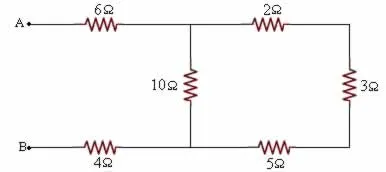
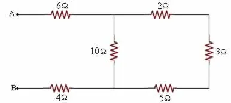

Questões
1. Pela Seções retas de um condutor de eletrecidade passar 12,0 C, a cada minuto, nesse condutor , a intensidade a corrente elétrica , em amperes é igual a:
- 1200w
- 4500w
- 3400w
- 1100w
2. Alguns peixes, como o poraquê, a enguia-elétrica da Amazônia,Podem produzir uma corrente elétrica quando se encontram em perigo. Um poraquê de 1m de comprimento em perigo, produz uma corrente em torno de 2A e uma voltagem de 600 volts.
O equipamento elétrico que têm potência aquela produzida por esse peixe em perigo é:
| Equipamento Elétrico | Potência aproximada(Watts) |
|---|---|
| Exaustor | 150 |
| Computador | 300 |
| Aspirador de pó | 600 |
| Churrasqueira elétrica | 1200 |
| Secadora de roupas | 3600 |
- Exaustor
- Computador
- Aspirador de pó
- Churrasqueira elétrica
- Secadora de roupas
3. A intensidade do campo elétrico, num ponto situado a 3,0 mm de uma carga elétrica puntiforme Q=2,7µc no vácuo Dados:K.O=9*10 9 N*m2/C2
- 3,5*106N*m2/C2
- 2,7*109N*m2/C2
- 3,7*108N*m2/C2
- 2,8*109N*m2/C2
4. Uma carga elétrica puntiforme com q=4,0µc, que é colocada em um ponto P do vácuo, fica sujeita a uma força elétrica de intensidade 1,2N. O campo elétrico nesse ponto P tem intensidade:
- 6,5*106N/C
- 2,8*105N/C
- 3,0*106N/C
- 3,0*105N/C
5. Como uma forma de complementação á lei de Faraday,utilizamos a lei de Lenz, De acordo com essa , a força eletromotriz induzida sobre um condutor surge em oposição á variação do Fluxo magnético que atravessa. Tal lei é uma consequência direta do(a):
- Lei de Ampere
- Lei de Ohm
- Principio da conservação da energia
- Teorema de Arquimedes
6. Durante o intervalo de tempo de 2,0S ocorre uma variação de fluxo magnético de 5,0 Wb sob um condutor de resistência elétrica igual a 0,1Ω. A corrente elétrica que atravessa esse condutor é
- 45A
- 60A
- 25A
- 20A
7. Determine o fluxo magnético, em Wb sobre uma espirra quadrada com lado de 20 cm sob influência de um campo magnético perpendicular á reta normal ao plano, dessa espira e de módulo 100 T
- 0
- 30
- 45
- 35
8. Entre os pontos A e B do circuito abaixo é aplicada uma ddp de 60V.
a. Determine a intensidade de corrente no resistor de 10 Ω.
b. Qual é a ddp entre os extremos do resistor de 6 Ω?  9. Assinale, dentre as alternativas abaixo, aquela que apresenta um dispositivo cujo funcionamento baseia-se exclusivamente no fenômeno de indução eletromagnética, descrito pela lei de Faraday.
a. Determine a intensidade de corrente no resistor de 10 Ω.
b. Qual é a ddp entre os extremos do resistor de 6 Ω?  9. Assinale, dentre as alternativas abaixo, aquela que apresenta um dispositivo cujo funcionamento baseia-se exclusivamente no fenômeno de indução eletromagnética, descrito pela lei de Faraday.
- transistor
- transformador
- capacitor
- resistor
- 25,5
- 31,5
- 46,5
- 20,5